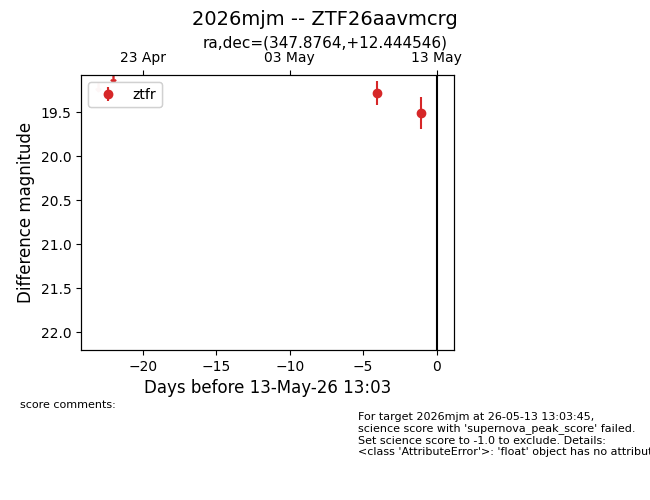
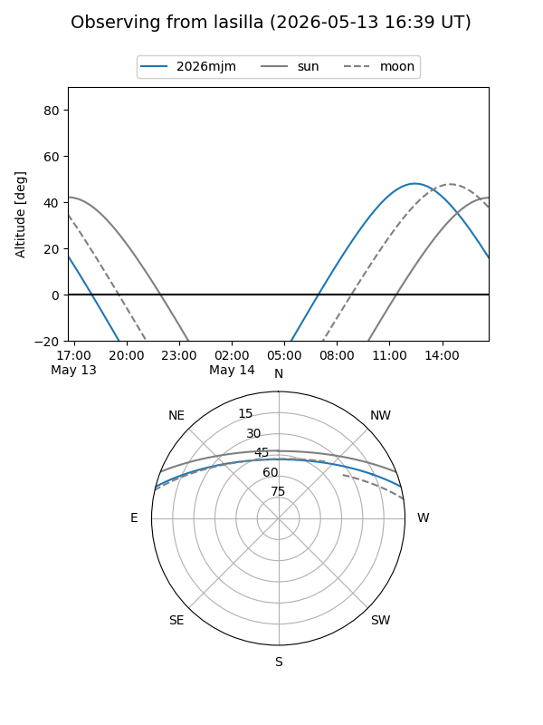
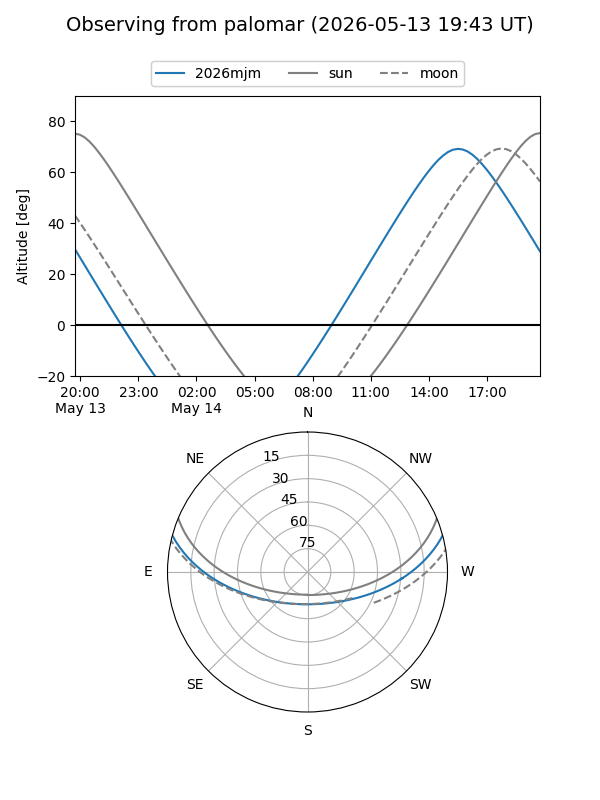
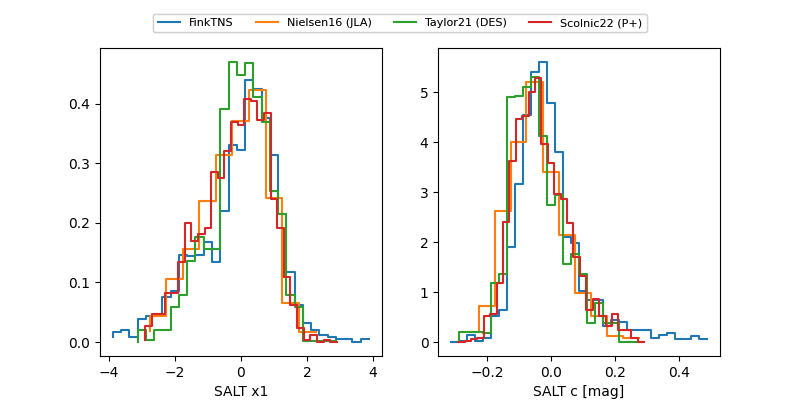

2026mjm
Target 2026mjm at 2026-05-13 13:05
Aliases and brokers:
FINK: link
Lasair: link
ALeRCE: link
TNS: link
YSE: link
alt names
ZTF26aavmcrg (ztf,fink_ztf)
2026mjm (tns,yse)
Coordinates:
equatorial (ra, dec) = 347.8764,+12.44455
equatorial (HMS+DMS) = 23:11:30.33,+12:26:40.36
galactic (l, b) = (88.2218,-43.59041)
Flags:
Photometry:
last ztfr=19.51
2 ztfr detections
Lightcurve

Visibility


Additional plots
